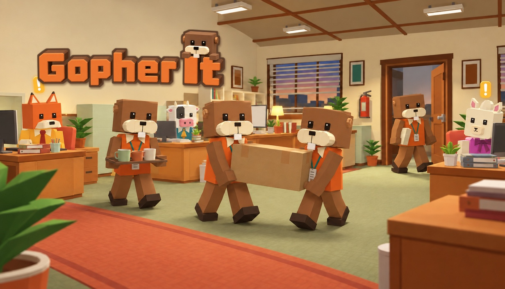

Gopher It: Office Intern Simulator
A cozy first-person job sim about being the newest intern. When a coworker calls, you walk over and do what they need. Solo or with up to three friends. Free demo out now, full game November 9, 2026, on Steam for Windows.